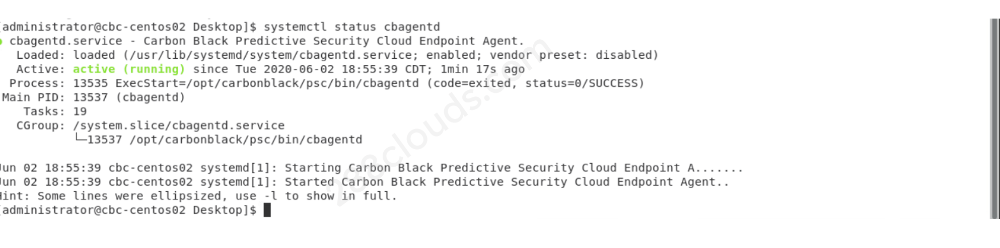

Carbon Black Cloud Sensor Install on a Linux Machine

Contenido
~ Este post será traducido al español próximamente ~
Let’s manually install a Carbon Black Cloud (CBC) sensor on a CentOS 7 machine!
Prerequisites
- Carbon Black Cloud access (Note: the environment I’m using is Carbon Black Cloud Enterprise)
- CentOS 7 machine (can be Ubuntu as well)
Process Overview
- Download the Carbon Black Cloud sensor kit on the linux machine.
- Install the sensor via terminal.
- Verify that the endpoint shows up in Carbon Black Cloud.
Demo / Example
Download Carbon Black Cloud Sensor Kit
- Log into Carbon Black Cloud from the linux machine where you want to install the sensor.
- Go to “Endpoints” > “Sensor Options” and select “Download sensor kits”.

- Select “Download Kit” of the appropriate OS (in my case, RHEL/CentOS 6 & 7)
- Select “Company codes” under “Sensor Options” and make note of the company code. You’ll need it during the install.


Install Sensor
- Move the downloaded .tgz file to the Desktop (or wherever you want).
- Create a temporary directory on the Desktop (or wherever you placed the .tgz file):
mkdir cb-psc-install - Open terminal and navigate to the Desktop (or wherever you did the previous 2 steps).
- Extract the .tgz file into the temporary directory you’ve created:
tar -C <temporary directory name> -zxf <.tgz file name> - Install and register the sensor, using the company code noted from step 4 in the following command:
sudo cb-psc-install/install.sh <company code>. Once completed, it should say “Success: agent was successfully installed.”

Verify Installation
- Run the command
systemctl status cbagentdto check the status of the sensor. It should say “active (running)”.
- Go to Carbon Black Cloud UI > “Endpoints”, and your linux machine should now show up.